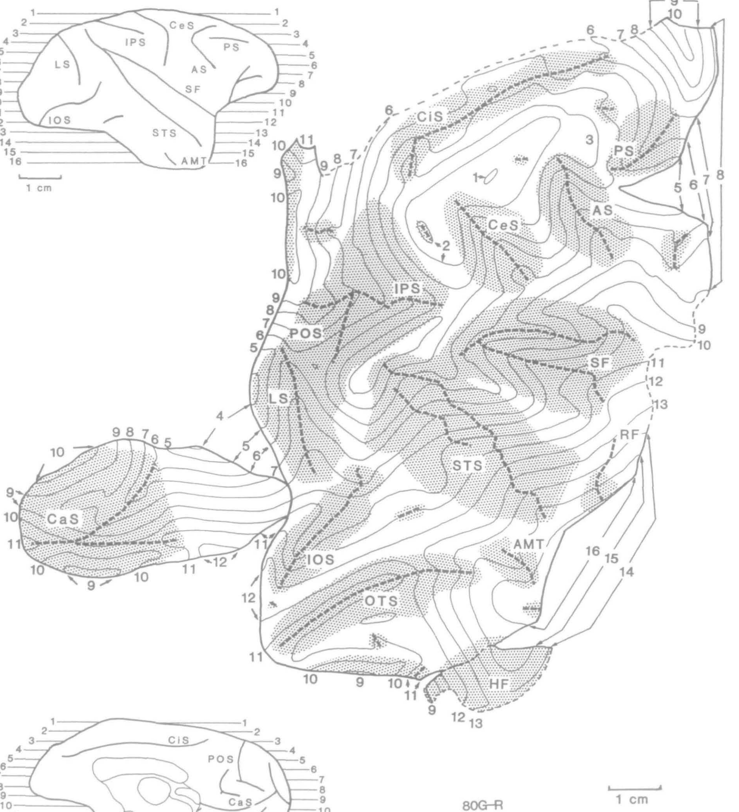
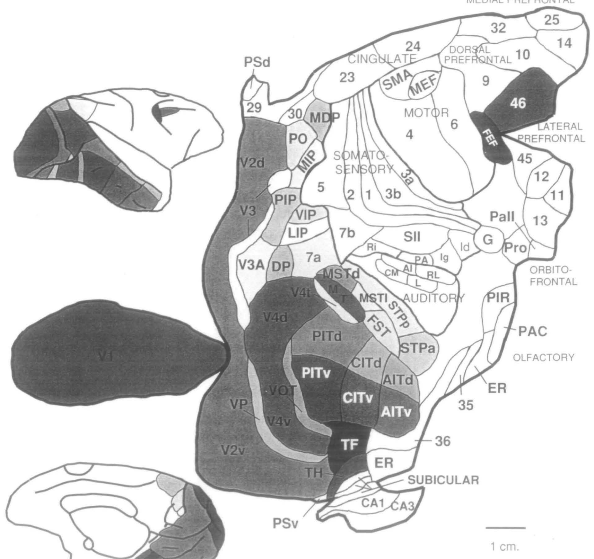
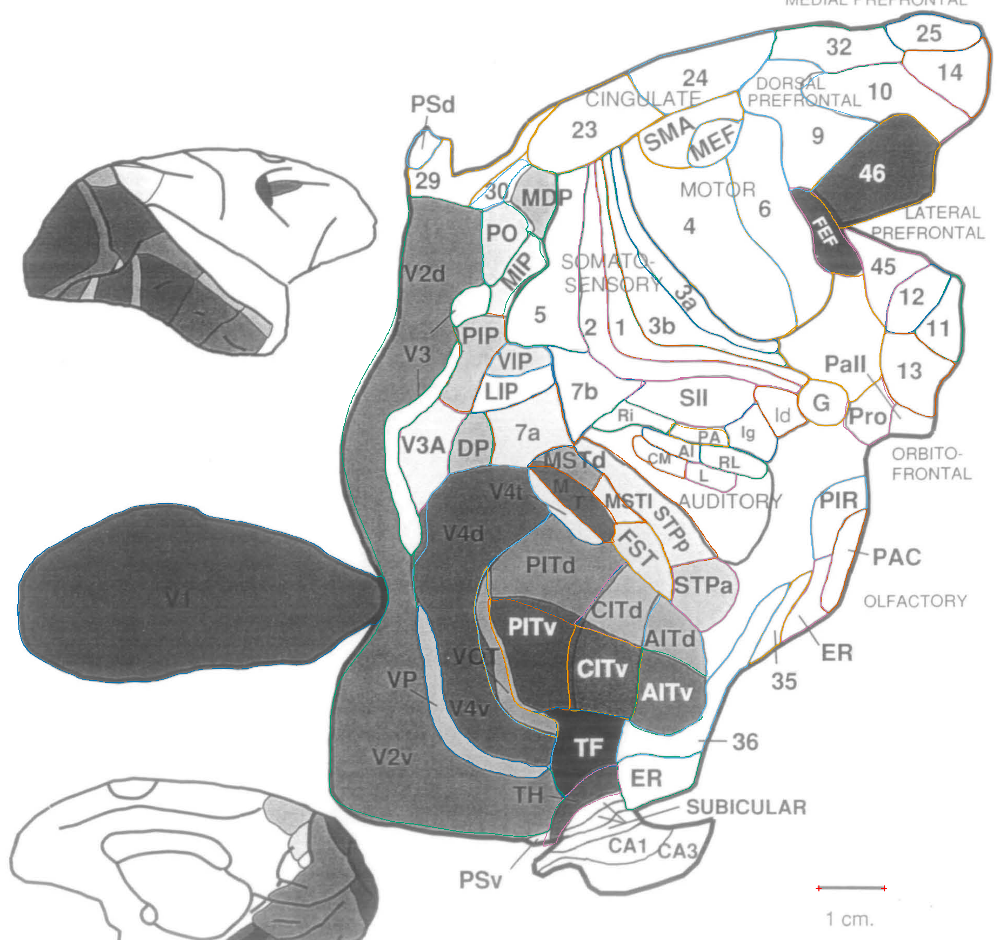
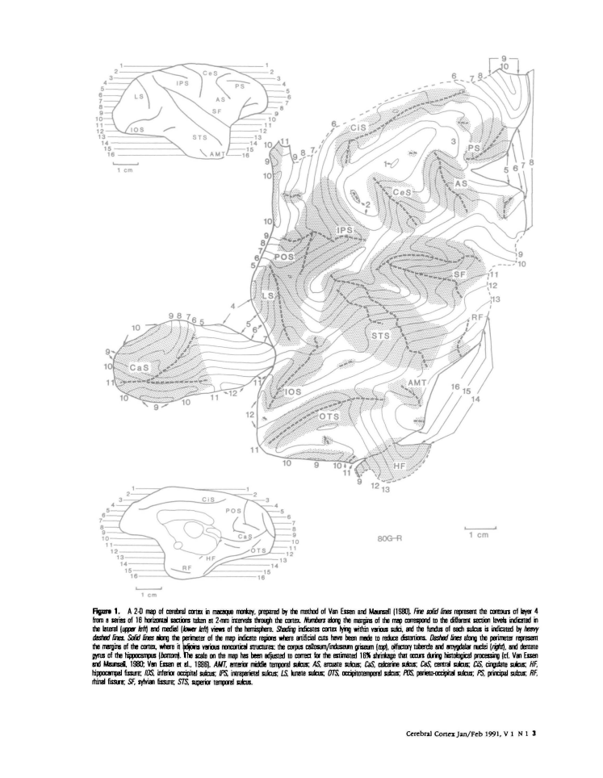
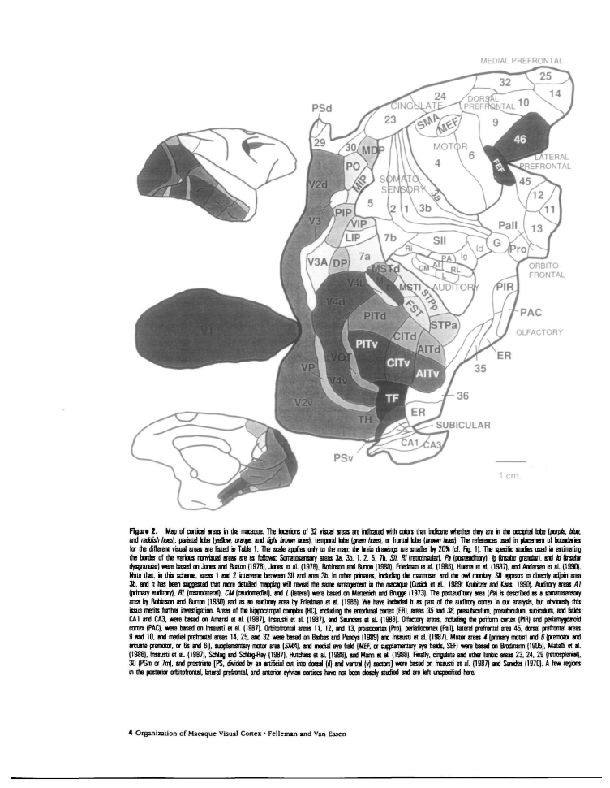
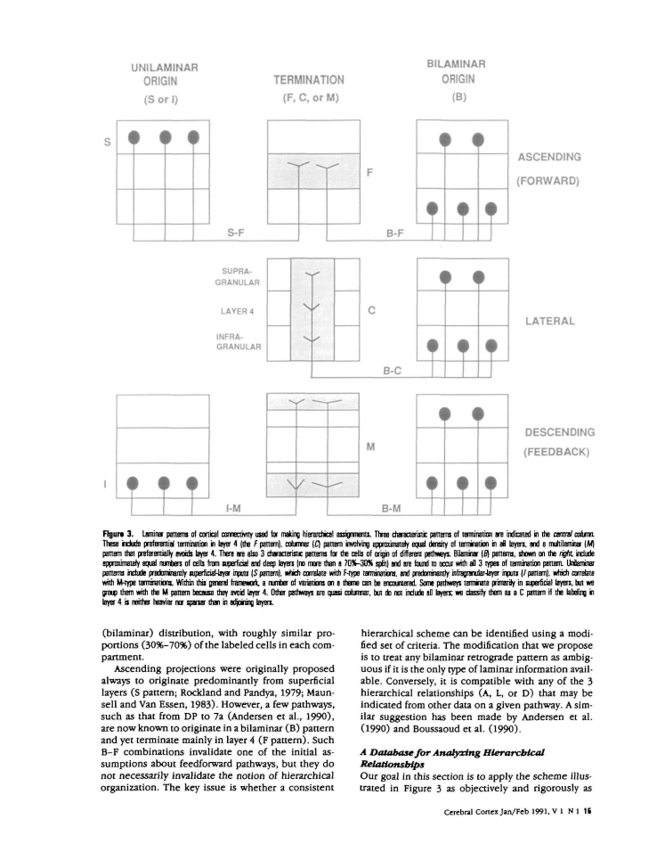

20 October 2026 update: Review figure 2 corrections using the color source: 74 contours, including 12 newly measured fields.
Source image, saved anatomical outlines and scale endpoints. Unfinished fields are NA.
Dense tracing on 4 pixels/PDF point source rendering. Anatomical interpretation provisional; hide overlay in the precision review to inspect the printed stroke.

| Field | mm² | % neocortex | Status |
|---|---|---|---|
| whole neocortex | NA | NA | not_measurable |
2026-10-20 figure 2 revision: color-assisted anatomical identity, external leader endpoints and dark-filled envelopes rechecked on original calibrated crop. Color raster is supporting evidence only; no color-image scale or resampling changes the measurement coordinates.


| Field | mm² | % neocortex | Status |
|---|---|---|---|
| 5 | 191.245 | NA | provisional; anatomical review required |
| 7b | 103.044 | NA | provisional; anatomical review required |
| 7a | 103.886 | NA | provisional; anatomical review required |
| SII | 112.135 | NA | provisional; anatomical review required |
| 4 | 399.207 | NA | provisional; anatomical review required |
| 6 | 236.606 | NA | provisional; anatomical review required |
| 3b | 142.002 | NA | provisional; anatomical review required |
| 3a | 106.896 | NA | provisional; anatomical review required |
| 1 | 127.218 | NA | provisional; anatomical review required |
| 2 | 175.231 | NA | provisional; anatomical review required |
| 23 | 175.258 | NA | provisional; anatomical review required |
| 24 | 158.627 | NA | provisional; anatomical review required |
| 32 | 105.626 | NA | provisional; anatomical review required |
| 25 | 63.937 | NA | provisional; anatomical review required |
| 14 | 96.754 | NA | provisional; anatomical review required |
| 10 | 159.149 | NA | provisional; anatomical review required |
| SMA | 83.195 | NA | provisional; anatomical review required |
| MEF | 43.561 | NA | provisional; anatomical review required |
| 11 | 56.517 | NA | provisional; anatomical review required |
| 12 | 63.533 | NA | provisional; anatomical review required |
| 13 | 95.803 | NA | provisional; anatomical review required |
| 45 | 73.856 | NA | provisional; anatomical review required |
| G | 43.781 | NA | provisional; anatomical review required |
| PIR | 63.451 | NA | provisional; anatomical review required |
| DP | 46.289 | NA | provisional; anatomical review required |
| PITd | 205.117 | NA | provisional; anatomical review required |
| PITv | 160.462 | NA | provisional; anatomical review required |
| CITd | 91.380 | NA | provisional; anatomical review required |
| CITv | 128.307 | NA | provisional; anatomical review required |
| AITd | 65.055 | NA | provisional; anatomical review required |
| AITv | 114.089 | NA | provisional; anatomical review required |
| TF | 106.858 | NA | provisional; anatomical review required |
| STPp | 125.533 | NA | provisional; anatomical review required |
| STPa | 84.016 | NA | provisional; anatomical review required |
| FST | 62.407 | NA | provisional; anatomical review required |
| PO | 62.024 | NA | provisional; anatomical review required |
| MDP | 59.284 | NA | provisional; anatomical review required |
| MSTd | 35.162 | NA | provisional; anatomical review required |
| MSTl | 23.395 | NA | provisional; anatomical review required |
| FEF | 64.678 | NA | provisional; anatomical review required |
| 46 | 207.850 | NA | provisional; anatomical review required |
| 9 | 201.492 | NA | provisional; anatomical review required |
| MIP | 45.961 | NA | provisional; anatomical review required |
| LIP | 52.878 | NA | provisional; anatomical review required |
| PIP | 82.192 | NA | provisional; anatomical review required |
| V3A | 100.038 | NA | provisional; anatomical review required |
| 29 | 87.283 | NA | provisional; anatomical review required |
| PSd | 18.496 | NA | provisional; anatomical review required |
| RL | 33.521 | NA | provisional; anatomical review required |
| Ig | 42.943 | NA | provisional; anatomical review required |
| Id | 38.840 | NA | provisional; anatomical review required |
| Pro | 49.982 | NA | provisional; anatomical review required |
| Pall | 184.969 | NA | provisional; anatomical review required |
| VIP | 34.806 | NA | provisional; anatomical review required |
| Ri | 32.879 | NA | provisional; anatomical review required |
| AI | 22.937 | NA | provisional; anatomical review required |
| CM | 25.171 | NA | provisional; anatomical review required |
| L | 22.942 | NA | provisional; anatomical review required |
| PA | 19.382 | NA | provisional; anatomical review required |
| 30 | 20.715 | NA | provisional; anatomical review required |
| ER posterior | 77.346 | NA | provisional; anatomical review required |
| V1 | 1133.377 | NA | provisional; anatomical review required |
| PAC | 47.088 | NA | provisional; anatomical review required |
| ER anterior | 42.093 | NA | provisional; anatomical review required |
| 35 | 33.327 | NA | provisional; anatomical review required |
| 36 | 123.996 | NA | provisional; anatomical review required |
| V3 | 113.132 | NA | provisional; anatomical review required |
| V4t | 31.284 | NA | provisional; anatomical review required |
| MT | 56.285 | NA | provisional; anatomical review required |
| TH | 48.990 | NA | provisional; anatomical review required |
| VOT | 71.596 | NA | provisional; anatomical review required |
| V4 | 487.759 | NA | provisional; anatomical review required |
| V2 | 1122.551 | NA | provisional; anatomical review required |
| VP | 85.372 | NA | provisional; anatomical review required |
| PSv | NA | NA | not_measurable |
| Subicular / hippocampal subdivisions | NA | NA | not_yet_digitized |
Felleman_VanEssen_1991: 3 numbered figures assessed; 74 field/fragment measurements. Saved observations, where present, are provisional. No certified complete-neocortex denominator is available.
Figure inventory · Methods and limits · Measurements · Complete-field absolute-area summary
cortical_map_geometry. 0 source-supported field/fragment contours; 1 explicit NA entries. The80G-R carrier is a macaque hemisphere with literature-composite parcellation, not an independently delineated new animal. All composite fields are excluded from biological case/species summaries. Monochrome merged visual borders remain NA. The scale already includes the source shrinkage estimate; no second correction. Figure1 encloses allo-/paleocortex as well as neocortex, so cannot supply a neocortex denominator. PDF20–47 render blank in this supplied source, despite ghost text; figures1–3 occur in pages1–19.
PDF page3; review preview only.

composite_parcellation. 20 October 2026 color-assisted revision: 74 field/component observations; 12 added and 50 existing contours revised. Composite atlas observations remain excluded from animal means.
Main maps: fig01
PDF page4; review preview only.

nonmeasurement source figure. Layer-specific connection schematic, not cortical surface geometry.
PDF page15; review preview only.
